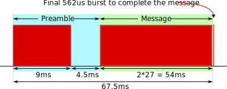

IR protocol basics¶
The IR protocol used by the remote control that is delivered together with the PicoGo robot, is called the “NEC protocol”. This protocol uses an encoding schema called pulse distance encoding. According to this econding, the logical values ‘0’ and ‘1’ are represented with different pause lengths between the 38kHz modulated IR bursts of 562.5us length. The following diagram shows the encoding in more detail.
For every key press on the remote control, a message of the following structure is transmitted. The message is started with a 9ms burst followed by a 4.5ms pause. Then follows the actual message content. The details are shown in the following diagram.
At the end another 562us pulse is sent to properly encode the last pulse distance.
The message itself consists of 32 bits. The first 8 bits are used for the device address. Then follow 8 bits with the inverted device address. The next 8 bit contain the command which are again followed by the inverted command.
Because of the inverted address and command bytes, we can be sure that both, the combined 16 bits of the address and the combined 16 bits of the command are exactly 27ms long.
The following diagram shows the details of a message that is sent to address 0x0 and contains the command 0xb5. It can be seen that the address is followed by the inverse of itself, the value 0xff and also the command is followed by its inverse, the value 0x4a.